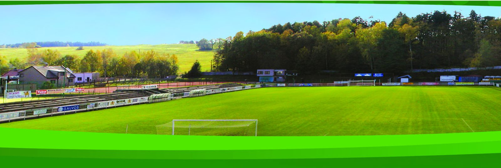

Zápasový dres
Zelenobílá sada v klubovém střihu, možnost jména a čísla.

Od Sparty Hlinsko roku 1905 přes SK a Spartak až po dnešní FC Hlinsko. Jeden klub, který se stěhoval napříč soutěžemi i názvy, ale nikdy neopustil Hlinsko.
FC Hlinsko, z.s. je spolek s více než pěti sty členy. Provozujeme deset mužstev napříč všemi věkovými kategoriemi, od fotbalové školičky pro předškoláky po áčko ve třetí nejvyšší soutěži.
Momenty, na které se v Hlinsku vzpomíná dodnes.
Postup do čtvrtfinále přes Baník Ostrava a následné čtvrtfinálové utkání s Duklou Praha. Největší pohárová jízda v dějinách klubu.
Postup z divize C a účast ve druhé nejvyšší československé soutěži. Historicky nejvýše, kam se hlinecký fotbal dostal.
Účast mládeže v celostátní žákovské lize, první velký úspěch klubové akademie.
Dorostenci si zahráli druhou nejvyšší mládežnickou soutěž v republice.
Hráči, kteří začínali na hlineckých hřištích a prosadili se v profesionálním fotbale, až do nejvyšší soutěže a reprezentace.
Všesportovní areál na okraji Hlinska se dvěma travnatými hřišti. V roce 2026 prošel slavnostním otevřením po rozsáhlé modernizaci.

Oblečení v klubových barvách si mohou objednat hráči, rodiče i fanoušci. Objednávky vyřizuje sekretář klubu. Napište nebo zavolejte a domluvíme velikosti, potisk se jménem i termín dodání.
Zelenobílá sada v klubovém střihu, možnost jména a čísla.
Mikina a kalhoty s klubovým znakem pro celoroční trénink.
Do chladu i deště, pro hráče, trenéry i doprovod.
Štulpny, tašky, čepice a další drobnosti se znakem klubu.
Napište nám, co potřebujete a v jaké velikosti. Ozveme se s dostupností a cenou.
Ať už chcete hrát, přivést dítě na trénink, nebo klub podpořit jako partner, ozvěte se nám. Dveře do Olšinek jsou otevřené.